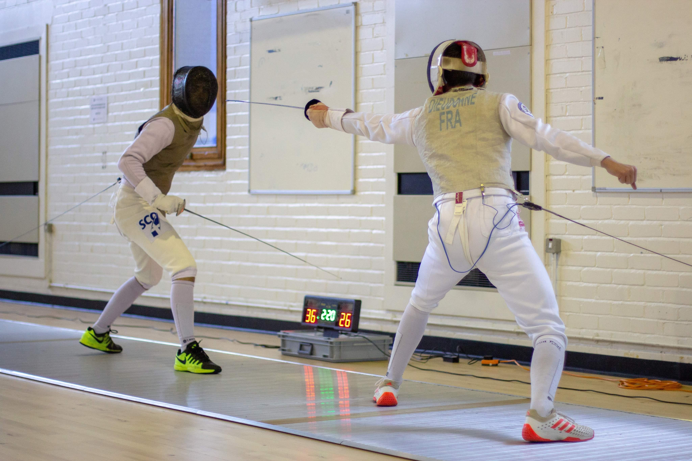

Fencing
One of my main hobbies in life is fencing, I started when I was 10 years old and I have kept it up ever since. I love the sport and I have poured a lot of effort and commitment into it and have achieved many goals and milestones such as representing scotland and the GB on multiple occasions.
University Fencing
At University I am a part of the Glasgow University Fencing Club (GUFC) and compete in BUCS (British University Championships) in the men's first team. Achievements and commitments in my university fencing include:
- Full Blue University Sports Award for excellence in sport
- Glasgow University Men's 1st team
- BUCS Northern League 1A Champions 2018/2019
- Represented Scotland in student 4 Nations in Cork
- Gold medal in Student 4 Nations team event
Other Accomplishments
As mentioned earlier I represented Scotland and GB on multiple occasions. Being part of the GB team was an amazing experience that took lots of patience and determination to get on, being on the team took me across europe to countries like Hungary and France, competing against some of the best fencers in the world for my age group.
- GB Cadet fencing team
- Competed across the UK in national circuit
- Represented Scotland in Junior Commonwealth Championships 2018
- Represented Scotland in the UK School Games 2015-2018
- 3 times Scottish Schools champion